A tymczasem w Cameracie...
.
2011-12-15
Ciepły, bezśnieżny, zimowy wieczór. Spotykamy się w świątecznych nastrojach na pierwszym w tym roku wieczorze kolęd. Jest to spotkanie opłatkowe z naszymi sympatycznymi słuchaczami Uniwersytetu Trzeciego Wieku, w Sali Gotyckiej Muzeum Żup Solnych w Wieliczce.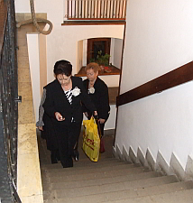 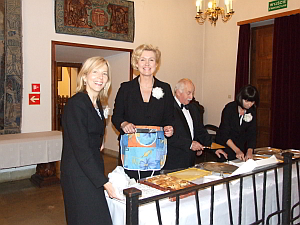
Nastrój uroczysty, świąteczny. Sala wypełniona do ostatniego miejsca.
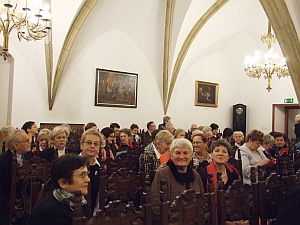 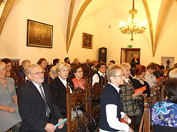
Na początek krótki koncert kolęd w wykonaniu naszego chóru, ale z małą niespodzianką...
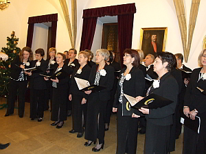 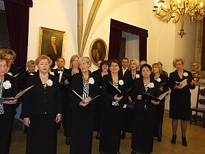
Pani dyrygent Cameraty w czasie koncertu składa życzenia wszystkim słuchaczom UTW i prosi o wspólne zaśpiewanie piosenki, życzeń, (której słowa przygotowała i rozłożyliśmy je przed koncertem na krzesłach) z repertuaru Czerwonych Gitar „Dzień jeden w roku”. Cała sala śpiewa razem z nami, bo jest to utwór znany naszym słuchaczom.
Po zaśpiewaniu życzeń Camerata dokończyła koncert kolęd, dedykując jedną z pastorałek p. Józefowi Kowalczykowi za otrzymanie „Perły Powiatu Wielickiego”.
Po koncercie wszyscy złożyli sobie życzenia i rozpoczęliśmy wspólne kolędowanie, popijając kawkę i przegryzając ciasteczko.
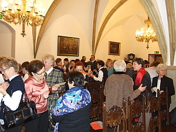 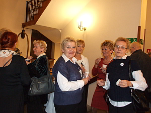
Przy fortepianie zasiadały na zmianę pani dyrygent z Ewą Roeske-Tracz a czasami grały na cztery ręce.
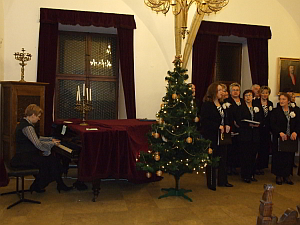 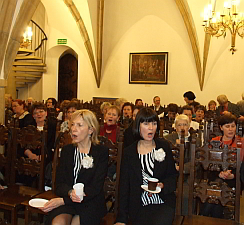 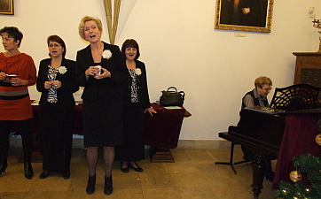
Czas płynął szybko w miłej śpiewającej atmosferze. Camerata śpiewała do ostatniego chętnego do śpiewania studenta UTW.
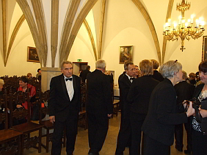 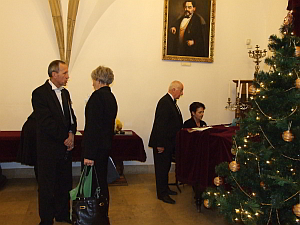
A tak opisał ten wieczór nasz kolega tenor z Cameraty, Józef Szerłomski.Witaj gwiazdko złota...
W czwartkowy, pogodny wieczór 15 grudnia, (dwadzieścia dwa dni przed jubileuszem piętnastolecia swojej działalności) wielicka Camerata, występem artystycznym, obejmującym kilka wybranych kolęd i pastorałek, uświetniła przedbożonarodzeniowe spotkanie słuchaczy I semestru Uniwersytetu Trzeciego Wieku.
Wieczór ten, pobudzający głębsze uczucia wzajemnej życzliwości, przebiegał w bardzo miłej, serdecznej atmosferze. O świąteczny wystrój gotyckiej Sali Muzeum Żup Krakowskich, gdzie odbyło się spotkanie opłatkowe, zadbały, przejęte krzewieniem wysokich wartości kulturowych trzy panie, członkinie chóru, na czele z prezeską Elżbietą Achinger oraz redaktorką miesięcznika „Życie Wieliczki i Powiatu” Elżbietą Tylek, a także dyrygentką Izabelą Szotą.
Dla każdej osoby zostały przygotowane opłatki, ciastka, napoje, a nawet drobne upominki.
Oficjalną część opłatkowego wieczoru rozpoczęło powitanie zebranych przez założycielkę i opiekunkę UTW, wspomnianą już E. Achinger. Przekazała w nim również Życzenia dla wszystkich uczestników uroczystości i odczytała „Modlitwę” ks. Jana Ziei, zaczerpniętą z jego książki pt „Zasady życia chrześcijańskiego”- Ojcze nasz... Następnie chór zaśpiewał kilka kolęd i pastorałek wybranych ze swego repertuaru.
Ich układ, ze względu na specyficzny charakter i dynamikę został wyeksponowany następująco:
„Jezus malusieńki”
„Kolęda” opr. P.Piątek
„Leży Jezus maleńki”
„Gdy śliczna Panna”
„W pole, w pole pasterze zaszli”
Pod koniec koncertu, wspólnie ze wszystkimi uczestnikami wieczoru, chór zaśpiewał pieśń „Dzień jeden w roku” z repertuaru Czerwonych Gitar. Tekst pieśni przygotowany i rozprowadzony uprzednio przez p. dyrygent Izabelę Szotę wśród uczestników spotkania był dobrą pomocą we wspólnym śpiewie.
W czasie koncertu miały miejsce momenty szczególne, które uwypukliła dyrygentka, podkreślając piękno, emocjonalną głębię, a z drugiej strony ujmującą prostotę tekstów polskich pieśni bożonarodzeniowych. Przed kolędą „Gdy śliczna Panna” wspomniała fakt, że chór Camerata w czasie niegdysiejszego pobytu w Rzymie, zaśpiewał tę kolędę w Bazylice pod wezwaniem „Santa Maria Maggiore”, a to było w maju, ale w tej świątyni można podobno śpiewać kolędy w ciągu całego roku.
Innym osobliwym momentem opłatkowego wieczoru było zadedykowanie jednej z pastorałek Józefowi Kowalczykowi, nagrodzonemu przez władze miasta za artystyczną twórczość rzeźbiarską, a w ten sposób podniosły nastrój zyskał cechę jakby pewnego rodzaju benefisu Artysty.
Należy podkreślić, że wszystkie, zaprezentowane na koncercie pieśni bożonarodzeniowe zostały przyjęte przez słuchaczy z radością, przejęciem i nagrodzono je oklaskami. Także „Kolęda” zaczynająca się od słów „Witaj gwiazdko złota na niebios na niebios przestworze, witaj nam radośnie Dzieciąteczko Boże...”, zabrzmiała ciepło i rozczulająco, zwłaszcza w części solowej, w wykonaniu Ani Wilk-Nędza. Kolędę „Bóg się rodzi” śpiewali słuchacze razem z członkami chóru Camerata, a oczy wielu z nich pokryła mgiełka nostalgii czy uniesienia.
Po koncercie łamiąc się opłatkiem, przekazywano sobie wzajemnie życzenia świąteczne i noworoczne. W ruch poszły aparaty, które intensywnie błyskały w dłoniach „Cameratki” Barbary Borowiec-Kowalczyk, czy Małgorzaty Wysockiej-Cebula. Ja też włączyłem się w „korowód” życzeniomówców a należy podkreślić, że niektóre Gwiazdy i Gwiazdeczki opłatkowego wieczoru, przez długi czas były oblegane... a potem już tylko nastrój obfitujący pogodne, radosne rozmowy i kolędy... kolędy... zwłaszcza, gdy do fortepianu zasiadła I. Szota, wspólne kolędowanie „porwało” wszystkich, w ten sposób przez dłuższy czas można było usłyszeć wiele popularnych w naszym kraju kolęd czy pastorałek w wykonaniu, co tu dużo mówić, spontanicznie zaistniałego chóru, najliczniejszego chyba w wokalnych kronikach tej pięknej, gotyckiej Sali, a może i w dziejach Wieliczki, bo liczącego bez mała 150 osób.
Pod koniec kolędowania, zapytałem znaną mi słuchaczkę UTW o wrażenia dotyczące występu Cameraty. Oceniła je wysoko, jednocześnie dodała, że najbardziej emocjonalnie wysłuchała pastorałki „W pole, w pole pasterze zaszli”, która była zaśpiewana przes nasz zespól podobno bardzo dynamicznie:„z dużą mocą wyrazu”.
To był piękny wieczór, a związane z nim przeżycia na długo zostaną w sercach... słuchaczy, uczestników pięknych chwil.

© Stowarzyszenie Muzyczne Chór Camerata Wieliczka